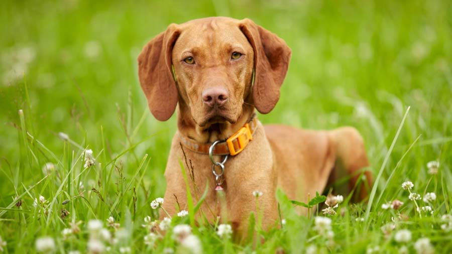
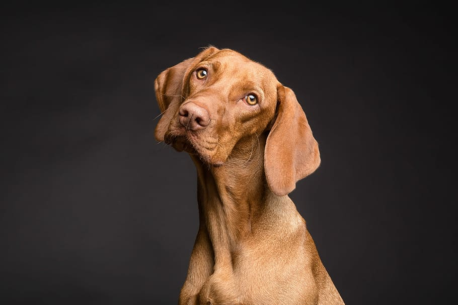
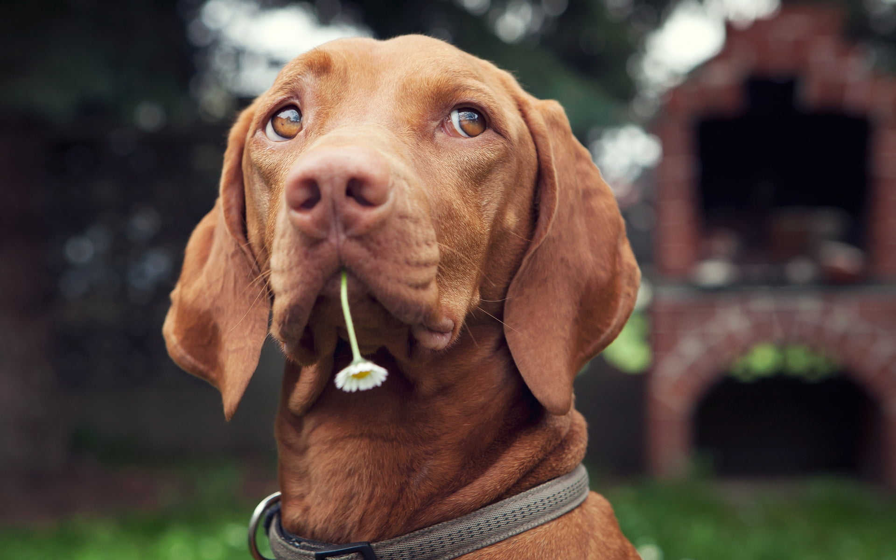
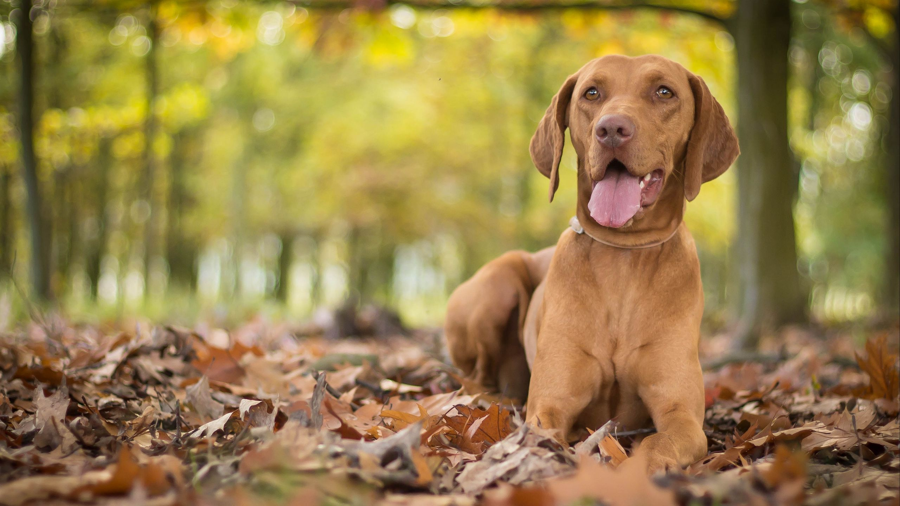

Vizsla

origin
Hungary
size
Medium
color
Others
type
Purebred
breed group
Sporting (AKC:1960), Gun Dogs (UKC)
character
Fluffy
temperament
Affectionate
Faithful
Intelligent
Loyal
height
22-26 inches (56-66 cm)
weight
20-24 inches (51-61 cm)
geography
Europe
overview
The Vizsla is lightly built but muscular, giving it speed and endurance in the field. Its gait is light, graceful, smooth and ground-covering. Its short smooth coat is dense, providing some protection from the elements. The golden rust color is a hallmark of the breed.
history
The Vizsla (pronounced ‘veezhla’, ‘zh’ as in ‘vision’), also known as the ‘Hungarian Vizsla’, ‘Hungarian Pointer’, or ‘Magyar Vizsla’, is an ancient Hungarian breed. It was used by the Magyar tribe of the Carpathian Basin for rat hunting as far back as 800 A.D, and later adapted for pointing, retrieving, and tracking. The first written record of the Vizsla appears in the ‘Illustrated Vienna’ chronicle, prepared on order of King Louis the Great in 1357. Vizslas faced near extinction in the 1800’s, falling in popularity to the English pointer.
The Vizsla is an ancestor of the Weimaraner and German Shorthaired Pointer, and these breeds may have been later crossed back into the Vizsla. The rare Wirehaired Vizsla (only a few hundred exist in North America) was developed by crossing the Vizsla with the German Wirehaired Pointer and Griffon in the 1930’s for a dog with heavier coat for hunting in cold weather. A Vizsla named Sari was the first Vizsla imported to the United States, in 1950. The Vizsla was recognized by the American Kennel Club in 1960 and is today a popular show dog, hunter, and pet.
Photo Gallery


